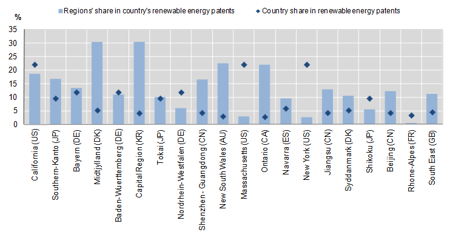

Patent data - The geography of invention
Patent data can be used to study the within-country geographical properties of inventive processes, e.g. the role of local actors in regional or national innovation (universities, small companies, large companies, etc.), their interactions, the profile and impact of regional technological specialisation, etc. As the addresses of the inventor and applicant are reported, patents can be allocated across regions at any degree of detail. This, however, involves formatting raw data adequately. Moreover, attention must be paid when interpreting geographical patent data, notably in terms of activities by companies, as their research activity is spread geographically and the address of invention is not necessarily where the research actually took place.
Characteristics of patent data for analysing the geography of invention
Regional classification
Information provided on the front page of a patent includes the address of the inventors and applicants. This information, which includes city, region and postal (ZIP) code, makes it possible to link patents to a particular region (of the inventor or of the applicant) with the use of lookup tables (postal codes, city names, etc.). Regionalisation of patent information depends on the details (and quality of information) given in the address. This information is not always consistent across patent offices and is not very detailed in some countries. As the information is often partial, and sometimes missing, sophisticated algorithms have to be run to identify the relevant information and match it to information given in specialised regional databases. For instance, USPTO patents usually do not include the ZIP code of the inventor, but only the city name and (not always) the state code. For regionalising such patents, the city name should be used, while recognising the need to deal with difficulties such as the fact that several cities may have the same name.
Methodological approaches to regional classification
Regions are defined in standard ways. The OECD uses the TL (“territorial levels”) classification, which has different levels of aggregation (TL 2 consists of about 300 macro-regions; TL 3 consists of 2 300 regions, e.g. the U.S. Bureau of Economic Analysis (BEA) economic areas, Japanese prefectures, French départements). In EU countries, regions are defined by NUTS (Nomenclature des Unités Territoriales Statistiques), an official classification of the European Commission. The OECD has compiled databases of patents (PCT, EPO) at TL3 level (see Maraut et al., 2008).
Issues in using regionalised patent data
When using regionalised patent data, keep in mind two caveats. First, regarding inventors, it is important not to use too detailed a “territorial level” in certain large urban areas. The inventor may live in a different postal code from that of the laboratory (which will then be in a neighbouring area). Co-inventors of the same invention may live in different zones of the same (large) city, but work at the same place. Hence, for large urban areas with several detailed sub-areas, it may be preferable to work data at a more aggregate level (e.g. TL 2 instead of TL 3). Examples in Europe are the Paris and London areas, which have similar issues. Second, a patent application may be filed by an affiliate of a firm, or co-filed by the firm and one of its affiliates. The address of the affiliate will appear in these cases and may not reflect the location of the entity actually controlling the patent. Consolidation of company ownership by groups will solve that problem.
Types of policy questions that can be addressed by patent data
Policy questions
Describing and understanding regional patterns of innovation is important both for regional and national policy makers; it provides the regional policy maker with benchmarks and references, while for national policy makers it captures an important dimension of national innovation policies. Attributing patents to regions makes it possible to address such important policy concerns as the following:
- The comparative technological performance and profile of regions.
- The importance of geographical proximity for innovation (Jaffe, Trajtenberg and Henderson, 1993; Audretsch and Feldman, 1996).
- The spatial distribution (or concentration) of innovative and productive activity across regions (e.g. Paci and Usai, 2000).
- Interaction and technological co-operation within and across regions (e.g. Breschi and Lissoni, 2001).
Examples of indicators
Figure 1 provides an example for how patent data can be used to show regional clusters of knowledge. Figure 2 is an indicator of regional hotspots in a specific field (renewable energy).
Figure 1. Patents per million inhabitants, Europe, average 2005-07
PCT filings, TL3 regions

Source: OECD (2010), “Measuring Innovation: A New Perspective”, www.oecd.org/site/innovationstrategy/45186706.pdf; OECD, REGPAT Database, January 2010; OECD, Regional Database, July 2009.
Note: Counts are based on patent applications filed under the Patent Co-operation Treaty (PCT), at international phase, by priority date and inventor’s region of residence, using fractional counts. The regional breakdown is provided at Territorial Level 3 (TL3).
Figure 2: Innovation hot spots in renewable energy, 2005-07
Patents of the world's top 20 patenting regions as % of the country's renewable energy patents

Source: OECD (2010), “Measuring Innovation: A New Perspective”, www.oecd.org/site/innovationstrategy/45187771.pdf; OECD, REGPAT Database, January 2010.
Note: Data relate to patent applications filed under the Patent Co-operation Treaty (PCT) for renewable energy technologies. Patent counts are based on the priority date, the inventor's region of residence and fractional counts. The regional breakdown used is based on OECD's Territorial Level 2.
Source: OECD (2009), 5.4
References
- Audretsch, D. B. and M. P. Feldman (1996), “R&D spillovers and the geography of innovation and production”, American Economic Review, Vol. 86, pp. 630–40.
- Breschi, S. and F. Lissoni (2001), “Knowledge spillovers and local innovation systems: A critical survey”, Industrial and Corporate Change, Oxford University Press, Vol. 10/4, pp. 975–1005.
- Jaffe, A. B., M. Trajtenberg and R. Henderson (1993), “Geographic localization of knowledge spillovers as evidenced by patent citations”, Quarterly Journal of Economics, Vol. 108, pp. 577–598.
- Maraut, S., H. Dernis, C. Webb, V. Spiezia and D. Guellec (2008), “The OECD REGPAT database: A presentation”, OECD Science, Technology and Industry Working Paper 2008/2, Directorate for Science, Technology and Industry, OECD, Paris. www.oecd.org/sti/working-papers [1].
- OECD (2010), “Regional innovation hotspots, in “Measuring Innovation: A New Perspective”, from OECD, REGPAT Database www.oecd.org/site/innovationstrategy/45187771.pdf; [2]
- OECD (2009), OECD Patent Statistics Manual, OECD Publishing, Paris. doi: 10.1787/9789264056442-en
- Paci, R. and S. Usai (2000), “Technological enclaves and industrial districts: An analysis of the regional distribution of innovative activity in Europe”, Regional Studies, Taylor and Francis Journals, Vol. 34/2, pp. 97–114.